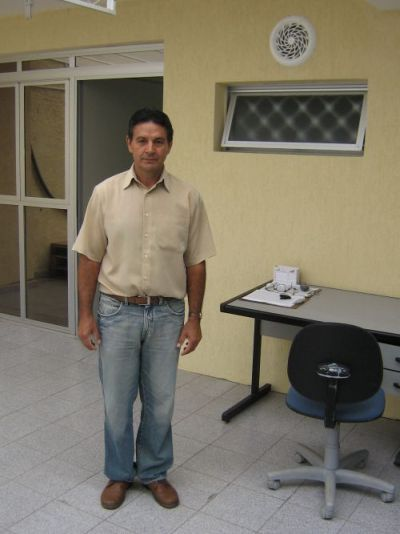

A fim de garantir a segurança dos funcionários e a preservação do patrimônio da empresa, é realizado o controle de fluxo das entradas e saídas de pessoas da empresa. O Sr. Olivar registra o horário, o número do documento e o nome do visitante antes de encaminhá-lo à Recepção. Além disso, garante o acesso das transportadoras, fazendo com que os produtos vendidos sejam despachados ao final de cada dia. Para isso, orienta as pessoas quanto ao espaço destinado ao estacionamento de carros na frente da empresa.
